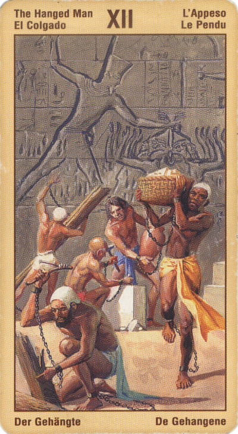

Повешенный
Повешенный означает углубление опыта. Одно из самых серьезных испытаний при посвящении наступает тогда, когда человек подчиняется необходимости, когда он отдает себя на волю божественного могущества и просто ждет, как в застывшем изображении, ничего не требуя и ничего не ожидая.
Немалая часть нашего жизненного пути контролируется определенными частями нашей личности, каждая из которых требует к себе внимания и одобрения, статуса и сил. Однако как только мы на время отвлечемся от всех этих проблем и забот и позволим себе встать на путь истинного посвящения, то обнаружим парадоксальную истину, в соответствии с которой свобода приходит тогда, когда мы возлагаем на себя те или иные обязательства, независимость - когда мы осознаем, что все в жизни взаимозависимо, а понимание - когда мы отказываемся от попыток что-то понять.
Повешенный - это посвященный, подвешенный к Древу Мира, которое объединяет три мира. С этим деревом он сливается в единое целое и может путешествовать по всем трем царствам.
Его семя становится омелой, которую потом пожнут золотым серпом для того, чтобы символизировать приход в этот мир божественной жизни.
Смысл карты: в твою жизнь пришло новое. Сейчас оно кажется тебе странным, необъяснимым; с тобой происходят неожиданные вещи, случается то, что не могло случиться. Но пусть это тебя не смущает: будь открыт всему новому, взгляни на мир иначе. Учись, терпи, сохраняй ясность духа – и жди.
Значение: На практике эта карта означает необходимость учиться новому. Таким образом, это одна из карт, дающих положительный ответ на вопросы вроде: “поступит ли ребенок в институт?” Однако и людям взрослым она советует не держаться за старые представления, а попробовать найти новую точку зрения.
Выпадая в раскладе, данная карта может свидетельствовать о том, что вы готовы к такому посвящению, либо что вскоре для вас наступит период успешной созидательной деятельности, в ходе которого вы сможете пожинать плоды, выросшие на ниве вашего вдохновения. Но сначала вам нужно набраться терпения, потому что в первую очередь Повешенный означает время ожидания и терпения. Повешенный описывает переворот в сознании, в ходе которого вы добровольно отдаете себя на волю целительной силы подсознания.
В более традиционном смысле эта карта может означать, что вы избавились или что вам необходимо избавиться от ожиданий и надежд, чтобы узнать побольше о той или иной ситуации.
Также не исключено, что вы радикально пересмотрите свои ценности и позиции: то, что раньше было для вас важным и значимым, больше таковым не является и наоборот.
Повешенный, если взглянуть на него по-простому, означает, что мы "застряли", зашли в тупик. При более близком рассмотрении оказывается, что за этой внешней неподвижностью кроются необходимость и неплохая возможность переосмыслить многое в жизни, а как следствие - произвести глубокие перемены, как в ней самой, так и во взгляде на нее. Пассивность, к которой мы приговорены в этот период, больше всего напоминает образ лежачего больного, - это тоже одно из значений карты. Представляет собой ту редкую ситуацию, которая требует от человека величайшего напряжения, давая ему возможность раскрыть себя целиком.
Неся в себе ощущение изначального единства и близости к небесной родине, карма погружает человека в созерцание жизненных волн и космических вибраций, - символизируемое планетой Нептун, в то первоначало, где родилось человеческое сознание, с которым он стремится слиться.
Принимает ли разум или отвергает радости и недостатки мира, он является лишь их пассивным отражателем: активную роль исполняет душа, совершающая свой выбор, и в реакциях которой срабатывает принцип аналогии: она реагирует на то, что ей близко, что ее задевает и трогает. Но если душа включилась в мировой поток, которому она обязана жизнью, разуму нечего ей противопоставить, поскольку он и сам того же происхождения. И сознание жертвует собой во имя непостижимого первоначала.
Один из смыслов повешенного - погружение Духа в материю. Поэтому человек изображен головой вниз к земле.
Негативные аспекты этого аркана - не видеть смысла в жизни, болтаться в подвешенном состоянии между небом и землей, неприкаянность. В то же время эта карта дает новое видение мира (что и неудивительно при взгляде вниз головой).
Двенадцатый аркан как нельзя лучше характеризует то, что принято считать славянской душой, - сочетание неприкаянности и просветленности. И планеты, соотносимые с этой картой, тоже характерны для этого психотипа: Нептун и Уран. На земном астрологическом уровне эта карта соответствует соединению Марса с Меркурием и означает предприимчивость и даже авантюризм, а в духовном смысле - это поиск новых решений и открытий.
В прямом положении карта является символом "стояния на голове", пресловутым переворотом всей системы ценностей.
Суть карты: самопожертвование, принесение некой жертвы для достижения желаемого. Рост мудрости, интуиции. Самоотречение, слепая преданность. Ясновидение. Переломный момент в жизни. Задумайтесь - готовы ли вы платить? Совет "заморозить" ситуацию и тщательно все обдумать. Не предпринимать решительных действий.
При раскладе на ситуацию карта может трактоваться двояко. С одной стороны, она недвусмысленно указывает на то, что в вашей жизни наступил переломный момент и вам пора определиться, в какую именно сторону двигаться дальше. Но эта же карта говорит о необходимости принести какую-то жертву во имя обретения желанной цели. В противном случае вам все равно придется что-то потерять, но жертва будет уже гораздо серьезнее!
В перевернутом виде означает, что человек не готов воспринимать новое, поэтому учеба и пересмотр старых взглядов маловероятны.
Для бизнесмена прямой Повешенный – это чаще всего совет начать осваивать новые области бизнеса. Если же он перевернут, то одно из двух: либо фирма богата и сильна, и тогда ей надо стоять на своем, не меняя ни буквы в ранее заключенных договорах (тогда она победит), либо же это маленькая фирма, которая многим рискует, и тогда ей лучше сразу сдаться “на милость победителя”, то есть того, кто первым пришел и предложил энную сумму денег.
Выпадая в раскладе в перевернутом положении, карта Повешенного может указывать на то, что вы действуете, исходя из эгоистичных или неясных побуждений. В качестве альтернативы может быть так, что вы предпринимаете все от вас зависящее, но в действительности чувствуете себя уязвимым и поэтому не можете действовать честно, прямо и со знанием дела. Не исключено, что вы ощущаете себя жертвой и не можете до конца быть самим собой. Может быть, у вас выбили почву из-под ног или же вы просто скучаете.
В перевернутом положении карта означает чрезмерную погруженность (эгоцентризм) в свои дела (обратное бескорыстной жертве во имя других), а также бесполезную погоню за недостижимой мечтой.
Отрицательное значение: Эгоизм, стремление грести под себя, потери чего-то, махинации.Человек ,который может вас обмануть. Иногда предвещает риск насильственной смерти.